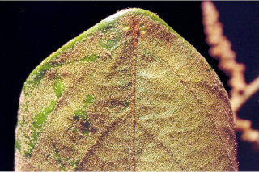
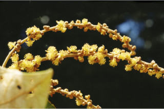
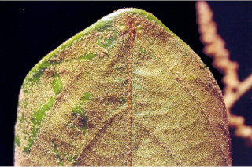
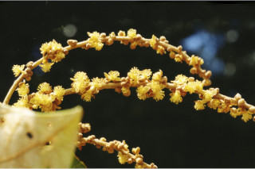

Trees up to 12 m tall.
12 ಮೀ. ಎತ್ತರದವರೆಗೆ ಬೆಳೆಯುವ ಮರಗಳು.
12 മീറ്റര് വരെ ഉയരമുള്ള മരങ്ങള്.
மரங்கள் 12 மீ. உயரம் வரை வளரக்கூடியது
Bark brown, lenticellate; blaze cream.
ತೊಗಟೆ ಕಂದು ಬಣ್ಣದಲ್ಲಿದ್ದು ವಾಯುವಿನಿಮಯ ಬೆಂಡು ರಂಧ್ರಗಳ ಸಮೇತವಿರುತ್ತದೆ; ಕಚ್ಚು ಮಾಡಿದ ಜಾಗ ಕೆನೆ ಬಣ್ಣದಲ್ಲಿರುತ್ತದೆ.
ശ്വസനരന്ധ്രങ്ങളുള്ള, തവിട്ട് നിറത്തിലുള്ള പുറം തൊലി; വെട്ടുപാടിന് ക്രീം നിറം.
மரத்தின் பட்டை ப்ரவுன் நிறமானது, லெண்டிசெல் கொண்டது; உள்பட்டை கிரீம் நிறமானது.
Young branchlets flat, stellately tawny tomentose.
ಕಿರುಕೊಂಬೆಗಳು ಚಪ್ಪಟೆಯಾಗಿದ್ದು ಕಂದು ಮಿಶ್ರಿತ ಹಳದಿ ಬಣ್ಣದ ದಟ್ಟ ಮೃದು ತುಪ್ಪಳದಿಂದ ಕೂಡಿರುತ್ತದೆ.
കരുവാളിച്ച നക്ഷത്രാകാര രോമിലമായ, പരന്ന ഇളം ഉപശാഖകള്.
சிறிய நுனிக்கிளைகள் தட்டையானது, நட்சத்திர வடிவுடைய உரோமங்களுடையது.
Leaves simple, alternate, spiral; stipule caducous; petiole 3-12.5 cm long, terete, stellately tomentose, swollen at both ends; lamina 8-25 x 6.5-20 cm, broadly ovate to orbiculate, apex acute to acuminate, base peltate or subpeltate, usually entire or trilobed when young, coriaceous, densely white stellate tomentose beneath; 3-5_nerved_at_base; tertiary_nerves nearly horizontal percurrent.
ಎಲೆಗಳು ಸರಳವಾಗಿದ್ದು ಪರ್ಯಾಯ ಮತ್ತು ಸುತ್ತು ಜೋಡನಾ ವ್ಯವಸ್ಥೆಯಲ್ಲಿರುತ್ತವೆ. ಕಾವಿನೆಲೆಗಳು ಉದುರಿಹೋಗುವ ಮಾದರಿಯಲ್ಲಿರುತ್ತವೆ; ತೊಟ್ಟುಗಳು 3 ರಿಂದ 12.5 ಸೆಂ.ಮೀ.ಉದ್ದವಿದ್ದು ದುಂಡಾಗಿರುತ್ತವೆ, ಕಾಲುವೆಗೆರೆ ಸಮೇತವಿದ್ದು ನಕ್ಷತ್ರ- ದಟ್ಟ ಮೃದು ತುಪ್ಪಳದಿಂದ ಕೂಡಿರುತ್ತದೆ ಹಾಗೂ ಎರಡೂ ತುದಿಯಲ್ಲಿ ಊದಿಕೊಂಡಿರುತ್ತವೆ ; ಪತ್ರಗಳು 8.5 -12.5 X 6.5 –20 ಸೆಂ. ಮೀ. ಗಾತ್ರದಲ್ಲಿದ್ದು,ವಿಶಾಲವಾದ ಅಂಡಾಕಾರದಿಂದ ವೃತ್ತದವರೆಗಿನ ಆಕಾರ ಹೊಂದಿರುತ್ತವೆ; ಪತ್ರಗಳು ಚೂಪಾಗಿರುವುದರಿಂದ ಕ್ರಮೇಣ ಚೂಪಾಗುವ ತುದಿ ಹೊಂದಿರುತ್ತವೆ ,ಬುಡ ಚೂಪಾದುದರಿಂದ ಕ್ರಮೇಣ ಚೂಪಾಗುವ ಮಾದರಿಯಲ್ಲಿರುತ್ತದೆ; ಎಲೆ ತೊಟ್ಟು ಎಲೆಬುಡದ ಮಧ್ಯದಲ್ಲಿ ಅಥವಾ ಉಪ-ಮಧ್ಯದಲ್ಲಿರುತ್ತದೆ;ಎಲೆಯ ಸಾಮಾನ್ಯವಾಗಿ ಅಂಚು ಸಾಮಾನ್ಯವಾಗಿ ನಯವಾಗಿರುತ್ತದೆ ಅಥವಾ ಎಳೆಯದಾಗಿದ್ದಾಗ 3- ಹಾಲೆಗಳನ್ನುಳ್ಳದ್ದಾಗಿರುತ್ತದೆ; ಮೇಲ್ಮೈ ತೊಗಲನ್ನೋಲುವ ಮಾದರಿಯದಾಗಿದ್ದು ಪತ್ರದ ತಳ ಭಾಗ ಬಿಳಿ ಬಣ್ಣದ ನಕ್ಷತ್ರ-ದಟ್ಟ ಮೃದು ತುಪ್ಪಳದಿಂದ ಕೂಡಿರುತ್ತದೆ; ಪತ್ರದ ತಳಭಾಗದಲ್ಲಿ 3 ನಾಳಗಳಿರುತ್ತವೆ; ಮೂರನೇ ದರ್ಜೆಯ ನಾಳಗಳು ಲಂಬ ರೇಖೆಗೆ ಸಮಕೋನದಲ್ಲಿದ್ದು ಎಲೆ ದಿಂಡಿಗೆ ಅಡ್ಡವಾಗಿ ಕೂಡುವಂತವು.
ലഘുവായ ഇലകള്, ഏകാന്തരമായി, സര്പ്പിളമായി അടുക്കിയിരിക്കുന്നു; അനുപര്ണ്ണങ്ങള് എളുപ്പം കൊഴിഞ്ഞ് വീഴുന്നവയാണ്; ചാലുള്ള, രണ്ടറ്റവും വീര്ത്ത, നക്ഷത്രാകാര രോമിലമായ, ഉരുണ്ട ഇലഞെട്ടിന് 3 സെ.മീ. മുതല് 12.5 സെ.മീ. വരെ നീളം; പത്രഫലകത്തിന് 8 സെ.മീ. മുതല് 25 സെ.മീ വരെ നീളവും 6.5 സെ.മീ. മുതല് 20 സെ.മീ. വരെ വീതിയും, ആകൃതി വീതിയേറിയ അണ്ഡാകാരം തൊട്ട് വൃത്താകാരം വരെയാകാം, പത്രാഗ്രം നിശിതാഗ്രം തൊട്ട് ദീര്ഘാഗ്രം വരെയാകാം, പത്രാധാരം പെല്ട്ടേറ്റോ ഉപപെല്ട്ടേറ്റോ ആവാം, സാധാരണയായി അവിഭജിതം ഇളതായിരിക്കുമ്പോള് ത്രികര്ണ്ണിതമാണ്, ചര്മ്മില പ്രകൃതം, കീഴെ കനത്തില് വെളുത്ത നക്ഷത്രാകാര രോമിലമാണ്; പത്രാധാരത്തില് 3 മുതല് 5 വരെ ഞരമ്പുകളുണ്ട്; ത്രിതീയ ഞരമ്പുകള് തിരശ്ചീന-പെര്കറന്റ് വിധത്തിലാണ്.
இலைகள் தனித்தவை, மாற்றுஅடுக்கமானவை, சுழல் போல் அமைந்தது; இலையடிச்செதில் எளிதில் உதிரக்கூடியது; இலைகாம்பு 3-12.5 செ.மீ. நீளமானது, குறுக்குவெட்டுத் தோற்றத்தில் வளையமானது, நட்சத்திர வடிவ உரோமங்களுடையது, காம்பின் இருமுனைகளும் உப்பியவை; இலை அலகு 8-25 X 6.5-20 செ.மீ., அகன்ற முட்டை முதல் வட்டவடிவானது (ஆர்பிகுலேட்), அலகின் நுனி கூரியது முதல் அதிக்கூரியது, இலைக்காம்பு அலகின் தளத்தின் நடுவே (பெல்டேட்) அமைந்தது, பொதுவாக அலகின் விளிம்பு முழுமையானது அல்லது மூன்று பிளவுகளுடையது (இளம்குருத்து நிலையில்), கோரியேசியஸ், அலகின் அடிப்புறம் அடர்த்தியாக வெள்ளை நிறமான நட்சத்திர வடிவ உரோமங்கள் கொண்டது; அலகின் தளத்திலே 3-5 நரம்புகளுடையது; மூன்றாம் நிலை நரம்புகள் கிட்டதட்ட இணையான பெர்க்கரண்ட்.
Flowers unisexual, dioecious, in axillary or terminal panicles, stellate tomentose.
ಹೂಗಳು ಏಕಲಿಂಗಿಗಳಾಗಿದ್ದು ಗಂಡು ಮತ್ತು ಹೆಣ್ಣು ಹೂಗಳು ಪ್ರತ್ಯೇಕ ಸಸ್ಯಗಳಲ್ಲಿದ್ದು ತುದಿಯಲ್ಲಿನ ಅಥವಾ ಅಕ್ಷಾಕಂಕುಳಿನಲ್ಲಿನಕ್ಷತ್ರ- ದಟ್ಟ ಮೃದುತುಪ್ಪಳವುಳ್ಳ ಪುನರಾವೃತ್ತಿಯಾಗಿ ಕವಲೊಡೆಯುವ ಪುಷ್ಪಮಂಜರಿಯಲ್ಲಿರುತ್ತದೆ.
എകലിംഗികളായ പൂക്കള് നക്ഷത്രാകാരരോമിലമായ കക്ഷീയമോ ഉച്ഛസ്ഥമോ ആയ പാനിക്കിളുകളിലുണ്ടാകുന്നു; ഡയീഷ്യസാണ്.
மலர்கள் ஓர்பாலானவை, ஈரகம் கொண்டவை; இலைக்கோணங்களில் அல்லது தண்டின் நுனியில் காணப்படும் பேனிக்கிள், நட்சத்திர வடிவ உரோமங்களுடையது.
Capsule, globose, echinate with soft wooly spines; seeds 6.
ಸಂಪುಟ ಫಲಗಳು ಗೋಳಾಕಾರದಲ್ಲಿದ್ದು, ಮೆದುವಾದ ಉಣ್ಣೆ ಸಮೇತವಿರುವ ಗಡುಸಾದ ತರಕಲು ಗುಬುಟುಗಳನ್ನು ಹೊಂದಿರುತ್ತದೆ;ಬೀಜಗಳು 6.
6 വീതം വിത്തുകളുളള കായ, മൃദുവായ വൂളന് മുള്ളുകള് നിറഞ്ഞ ഗോളാകാര കാപ്സ്യൂള് ആണ്.
வெடிகனி (கேப்சூல்), முட்களுடையது, மென்மையான முட்களலானது; விதைகள் 6.


 


